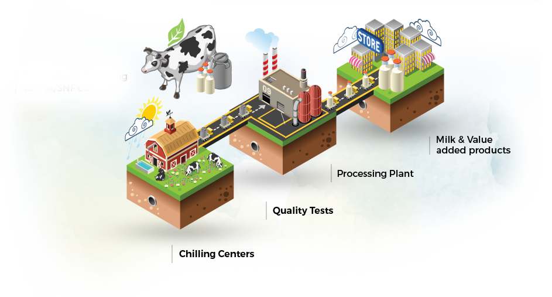

VNS&K MILK PRODUCTIONS
VNS&K MILK PRODUCTIONS

Roles & Responsiblities
:
Responsible for Marketing of Milk & Milk Products
Responsible for Procurement & Processing of Milk
Responsible for Collection of Milk
Responsible for Milk Production
PFA Standards
:
Milk Fat - not less than 80% by weight
Common Salt - not more than 3% by weight
Curd - not more than 1.5% by weight
Diacetyl - 4 ppm
Moisture - not more than 16%
Course Overview
:
This course should comprehensively aim at various constituents of milk and milk products, its technology and standards to make students competent to meet the needs of dairy industry.
The course will motivate them to carry out research and facilitate hands on training.
This course should impart sound knowledge on various aspects of dairy science, viz technology, chemistry and microbiology so as to enable the veterinary graduate to assist the poor farmer or animal owner in augmenting his income.
If any Queries Mail to me
----Designed by V>NAVEEN KUMAR